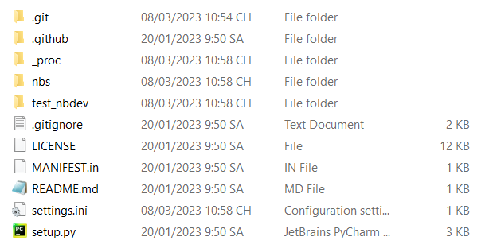
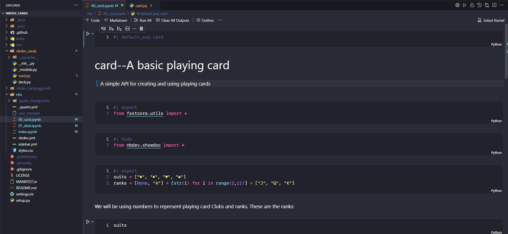
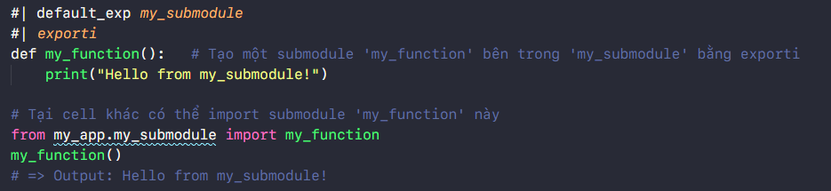
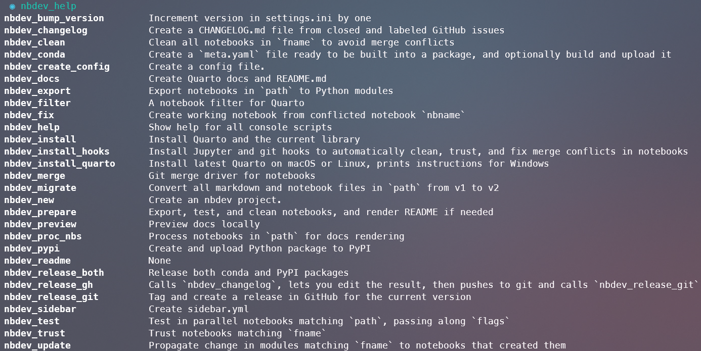

nbdev Tutorial
Một vài hướng dẫn cơ bản cách sử dụng nbdev cho AI Engineer, để biết thêm chi tiết về cách sử dụng hãy truy cập nbdev official tutorial hoặc YouTube video nbdev tutorial – zero to published project in 90 minutes

Why nbdev?
Là một AI engineer, bạn chủ yếu làm việc với các file .ipynb . Tuy nhiên, trong quá trình triển khai production, các file .py là bắt buộc để các model AI có thể hoạt động với Web backend. Tuy nhiên, hầu hết những người mới bắt đầu đều thiếu software skill và khó khăn trong việc code các file Python. Đó là lý do tại sao nbdev ra đời và đến giải cứu bạn.
Nbdev là một battery-ready notebook development platform, được xây dựng trên Quarto platform. Nó cho phép: - Đồng bộ giữa file .ipynb và file .py - Tạo nhanh document sử dụng markdown (*) trong khi develop - Publish package của bạn trên PyPI hoặc Conda - Continuous Integration với git và chạy trên git page - Test, code, document ở một nơi
(*) Markdown thường được sử dụng trong github repo với tên readme.md, để tìm hiểu thêm về Markdown hãy truy cập Markdown Guide.

How To Use nbdev
1. Installation
- Python
- Trình quản lý Python package: Khuyến khích sử dụng
condahoặcpip - Jupyter Notebook:
pip install notebookhoặcconda install notebook - nbdev:
pip install nbdevhoặcconda install -c fastai nbdev - Quarto:
nbdev_install_quarto
2. Tạo github repository trống và clone về local
- Bạn có thể tạo nhanh một github repo thông qua link này: github.com/new.
- Nhớ thêm description cho repo, bởi vì nbdev sẻ sử dụng nó. Không tạo tạo các file
README.md,.gitignore, hoặclicense. - Clone code về local và di chuyển đến repo đó bằng command
cd name_repotrên terminal.
3. Khởi tạo nbdev trên repository
- Để khởi tạo nbdev trên repository, bạn hãy sử dụng command
nbdev_newtrên terminal - Sau khi khởi tạo nbdev, một số file và folder được tạo ra:
.githubChứa workflow cho CI.
_proc
nbsLà viết tắt của “notebook source”, đây là nơi làm việc của các file notebook.ipynb
test_nbdevSau khi xử lý các tệp notebook, các tệp.pysẽ được export vô lib này (tên folder này dựa trên tên repository)
.gitignoreChỉ định file/folder không mong muốn khi push lên github
LICENSE
MANIFEST.in
README.mdFile này được đồng bộ từnbs/index.ipynb, nếu muốn edit file ‘README.md’ hãy vô file ‘index.ipynb’ edit
setting.iniChứa các thông số cấu hình cho project như tên tác giả, tên dự án, version …
setting.py

4. Push repository đã được khởi tạo nbdev lên GitHub
- Các command sau để push lên github:
git add .
git commit -m 'chore: initial commit'
git push
- Sau khi push reposirory nbdev của bạn lên GitHub, điều hướng đến
Actions, nếu bạn sẽ thấyCIbị Fail. Điều này là do GitHub mặc định giới hạn PAT permission, hãy nhấp vào settings trong repositorySettings > Actions > General > Workflow permissions > Read and write permission > Save. Bây giờ CI của bạn sẽ chạy lại và hoạt động ngay.
5. Kích hoạt GitHub Pages
Bạn cần kích hoạt GitHub Pages cho repository của mình bằng cách nhấp vào settings trong repository
Setting > Pages > Branchchọn branch bạn muốn vàSave.
Việc kích hoạt GitHub Pages này sẽ tạo ra một pages docs trông beautiful như này nbdev page example.

6. Các bước cơ bản để build một nbdev repository
Install hooks sử dụng command
nbdev_install_hooks.
Hooks đảm bảo rằng các kiểm tra và các processes cần thiết được chạy mỗi khi có thay đổi được thực hiện trên kho repository, như chuyển đổi các file notebooks thành file Python và kiểm tra syntax errors, giúp giữ code và repository được tổ chức và nhất quán.Edit .ipynb
Truy cập vào folder/nbsđể tạo và edit các file notebook ở đây, chi tiết các viết nbdev notebook sẽ được nêu trong phần Directives ở sau.Build library sử dụng command
nbdev_export.
Sau khi viết xong file notebook, bạn hãy sử dụng command này giúp convert từ file Jupyter Notebook.ipynbthành file Python.pyvà sử dụng làm library trong project, giúp code có thể reusable, maintainable và dễ dàng tích hợp vào các project khác. Ngoài ra nbdev còn convert file.ipynbhiển thị trên GitHub Page (khi push).
Note: Bạn cũng có thể sử dụngimport nbdev; nbdev.nbdev_export()tại cuối mỗi file notebook để export thay vì sử dụng command.
Ví dụ trong hình dưới, đây là file
00_card.ipynbtrong folder/nbs
Và đây là kết quả khi sử dụng command
nbdev_export, nbdev sẽ convert file/nbs/00_card.ipynbthành file/nbdev_cards/card.py(cụ thể tại những cell có#| exporttrên notebook sẽ được convert qua file.py)

Ngoài ra file
00_card.ipynbcũng sẽ được update lên GitHub Page khi push repository lên github thông quaCIcủa nbdev. Trong đó các số thứ tự trước tên fileipynbsẽ quyết định thứ tự của chúng trên page, fileindex.ipynbsẽ nằm đầu tiên.

Install package sử dụng command
pip install -e '.[dev]'.
Command này được sử dụng trong quá trình develop một Python package để cho phép package được cài đặt và sử dụng trong environment trực tiếp trong khi source code đang được chỉnh sửa, thường được sử dụng sau khi bạn export một file notebook.
Note: Nếu bạn thực hiện các thay đổi đối với code mà không ảnh hưởng đến quá trình install (chẳng hạn như thêm các feature mới hoặc fix bug), bạn có thể không cần phải chạy lệnh này.Preview docs sử dụng command
nbdev_preview.
Sau khi hoàn chỉnh một file notebook, khi run command này terminal sẽ hiển thị một browser link ở định dạng HTML chạy trên local (ví dụ nhưhttp://localhost:3744/). Click vào link để xem trước các bản notebook như thế nào trước khi được đưa lên GitHub Page.Prepare change sử dụng command
nbdev_prepare.
Sử dụng trước khi commit hoặc push lên github, để đảm bảo các module của bạn được export đúng cách và các bài test được vượt qua. Trong đó commandnbdev_prepaređóng gói các lệnh sau:
nbdev_export: Build file.pymodule từ Jupyter notebooks
nbdev_test: Tests các file để kiểm tra bug
nbdev_clean: Loại bỏ các output thừa trong notebook để tạo ra một phiên bản notebook “sạch” hơn để đăng trên Github
nbdev_readme: Updates file README.md từ fileindex.ipynb.Push lên Github
Lỗi có thể xảy ra vì bạn quên chạy commandnbdev_prepare. Vì vậy, hãy nhớ chạy command này trước khi push lên GitHub, các command để push github:
git add .
git commit -m <message>
git push
Directives
Trong nbdev, các directive (hay còn gọi là “magic comments”) là các câu lệnh đặc biệt được sử dụng để thực hiện các chức năng nhất định trong quá trình phát triển và tạo tài liệu cho package. Các directives bắt đầu bằng #| và được đặt ở đầu mỗi cell code trong Jupyter Notebook. Các directive được sử dụng như tín hiệu cho Quarto trong quá trình tạo docs. các tín hiệu này cho biết Quarto nên xử lý các ô như thế nào và định dạng tài liệu như thế nào. > Tìm hiểu thêm về Quarto tại quarto.org
1. Cell Visibility
Các directive sau đây để thực hiện các chức năng cho page, không áp dụng đối với file .py - #| hide Để ẩn cell code và output trên page. - #| echo: <true|false> Để ẩn cell code trên page và chỉ hiện output (false) , để hiện cả cell code và output trên page (true). - #| output: <true|false|asis> Để set hiển thị output, ẩn (false), hiện (true), hoặc hiển thị kiểu raw markdown (asis) trên page. - #| hide_line Để ẩn 1 dòng code trong cell notebook. - #| filter_stream <keyword> Lọc các dòng chứa từ khóa cụ thể trong kết quả output của cell. - #| code-fold: <show|true> Để thu gọn cell code.
2. Generating Source Code
#| default_exp <name>Để tạo ra một Python package<name>.pytừ tệp notebook hiện tại khi export.#| exportChỉ định một cell trong notebook sẽ được export đến file Python.py, ngoài ra directive này cũng tạo documentation chi tiết tại cell đó trên page.#| exportstương tự như#| exportnhưng hiển thị thêm docs thông quashowdoc.show_doc.#| exportiĐể đánh dấu một hàm hay một đoạn code trong tệp notebook để được xuất ra như một phần của một module con riêng biệt, ví dụ sau: 
3. Cell Execution
#| exec_doc: Tạo docs trên cell code.#| eval: <true|false>Khi để false, cell code sẽ được ignore trong quá trình test thông qua commandnbdev_test.
Command
Bạn có thể chạy command nbdev_help trên terminal để xem danh sách đầy đủ các command có sẵn:
